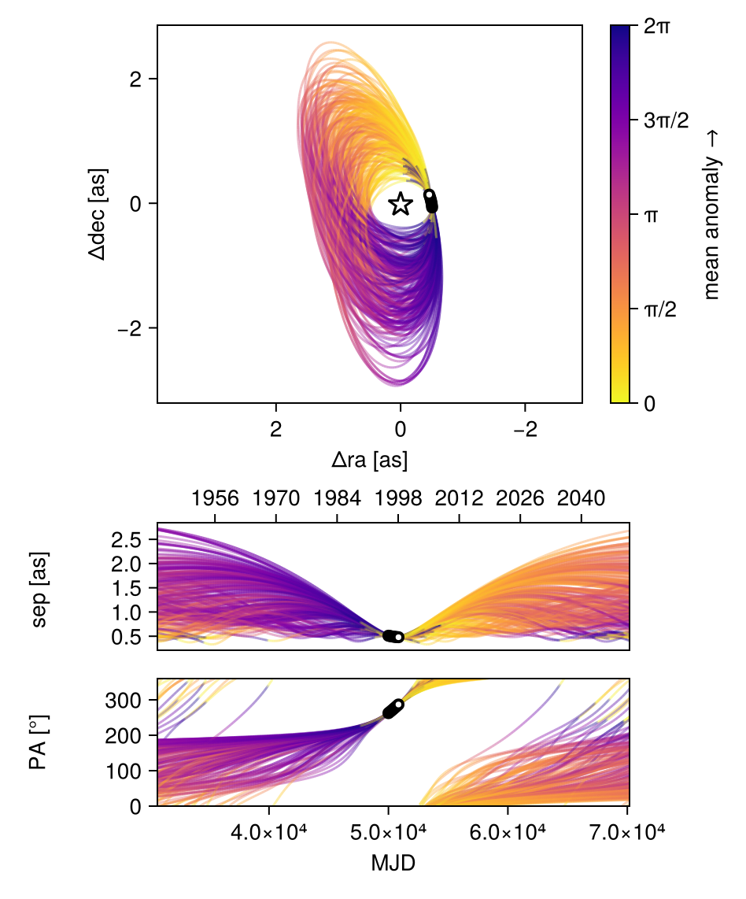
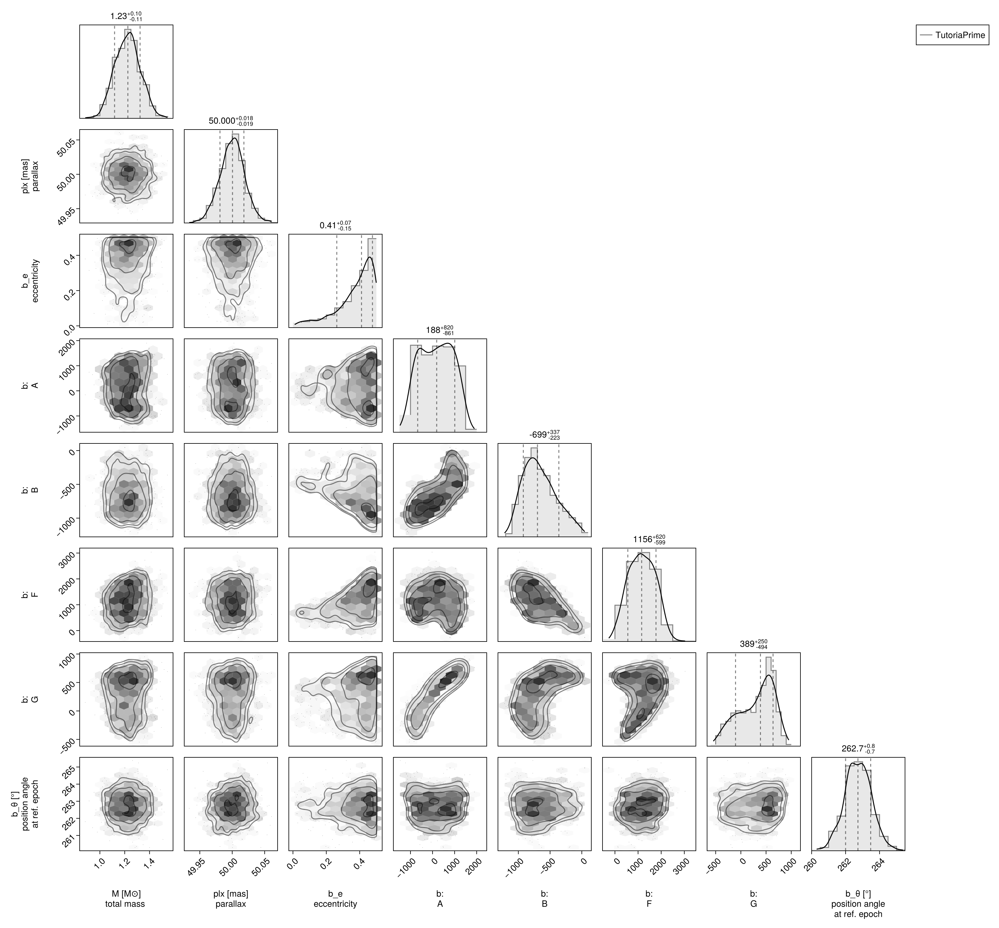
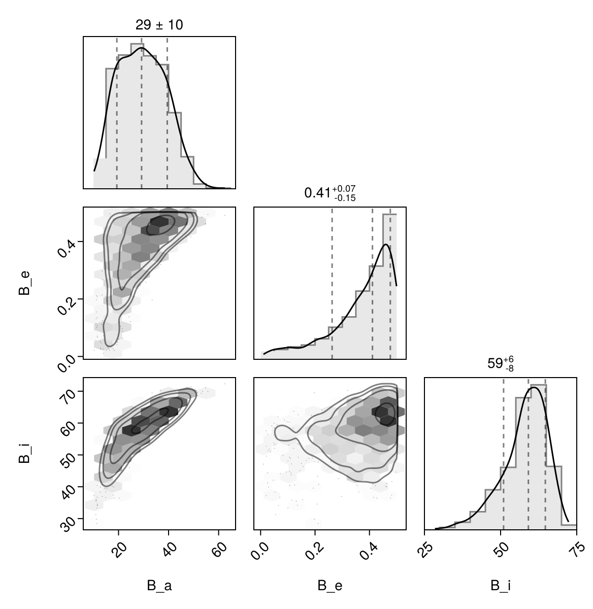

Fit with a Thiele-Innes Basis
This example shows how to fit relative astrometry using a Thiele-Innes orbital basis instead of the traditional Campbell basis used in other tutorials. The Thiele-Innes basis is more suitable then Campbell for fitting low-eccentricity orbits, because it does not have the issues where ω, Ω, and tp become degenerate as eccentricity and/or inclination fall to zero.
At the end, we will convert our results back into the Campbell basis to compare.
using Octofitter
using CairoMakie
using PairPlots
using Distributions
astrom_like = PlanetRelAstromLikelihood(
(epoch = 50000, ra = -505.7637580573554, dec = -66.92982418533026, σ_ra = 10, σ_dec = 10, cor=0),
(epoch = 50120, ra = -502.570356287689, dec = -37.47217527025044, σ_ra = 10, σ_dec = 10, cor=0),
(epoch = 50240, ra = -498.2089148883798, dec = -7.927548139010479, σ_ra = 10, σ_dec = 10, cor=0),
(epoch = 50360, ra = -492.67768482682357, dec = 21.63557115669823, σ_ra = 10, σ_dec = 10, cor=0),
(epoch = 50480, ra = -485.9770335870402, dec = 51.147204404903704, σ_ra = 10, σ_dec = 10, cor=0),
(epoch = 50600, ra = -478.1095526888573, dec = 80.53589069730698, σ_ra = 10, σ_dec = 10, cor=0),
(epoch = 50720, ra = -469.0801731788123, dec = 109.72870493064629, σ_ra = 10, σ_dec = 10, cor=0),
(epoch = 50840, ra = -458.89628893460525, dec = 138.65128697876773, σ_ra = 10, σ_dec = 10, cor=0),
)
@planet b ThieleInnesOrbit begin
e ~ Uniform(0.0, 0.5)
A ~ Normal(0, 10000) # milliarcseconds
B ~ Normal(0, 10000) # milliarcseconds
F ~ Normal(0, 10000) # milliarcseconds
G ~ Normal(0, 10000) # milliarcseconds
θ ~ UniformCircular()
tp = θ_at_epoch_to_tperi(system,b,50000.0) # reference epoch for θ. Choose an MJD date near your data.
end astrom_like
@system TutoriaPrime begin
M ~ truncated(Normal(1.2, 0.1), lower=0.1)
plx ~ truncated(Normal(50.0, 0.02), lower=0.1)
end b
model = Octofitter.LogDensityModel(TutoriaPrime)LogDensityModel for System TutoriaPrime of dimension 9 and 9 epochs with fields .ℓπcallback and .∇ℓπcallback
We now sample from the model as usual:
using Random
Random.seed!(0)
results = octofit(model)Chains MCMC chain (1000×24×1 Array{Float64, 3}):
Iterations = 1:1:1000
Number of chains = 1
Samples per chain = 1000
Wall duration = 5.74 seconds
Compute duration = 5.74 seconds
parameters = M, plx, b_e, b_A, b_B, b_F, b_G, b_θy, b_θx, b_θ, b_tp
internals = n_steps, is_accept, acceptance_rate, hamiltonian_energy, hamiltonian_energy_error, max_hamiltonian_energy_error, tree_depth, numerical_error, step_size, nom_step_size, is_adapt, loglike, logpost, tree_depth, numerical_error
Summary Statistics
parameters mean std mcse ess_bulk ess_tail ⋯
Symbol Float64 Float64 Float64 Float64 Float64 Fl ⋯
M 1.2234 0.1007 0.0039 670.0643 550.7818 1 ⋯
plx 50.0000 0.0191 0.0006 1184.2566 716.6565 1 ⋯
b_e 0.3740 0.1146 0.0057 410.5570 418.0917 1 ⋯
b_A 167.3897 731.3950 62.2730 147.6477 468.5410 1 ⋯
b_B -655.0067 261.3107 21.2859 163.1323 190.0866 1 ⋯
b_F 1164.0520 564.1046 42.2199 176.3090 115.8977 1 ⋯
b_G 305.7235 342.2681 29.4702 151.3853 290.2236 1 ⋯
b_θy -0.1278 0.0185 0.0007 764.6598 641.5382 1 ⋯
b_θx -1.0022 0.0992 0.0041 604.5788 623.5364 1 ⋯
b_θ -1.6977 0.0136 0.0005 713.5652 625.9025 0 ⋯
b_tp 16593.3821 32144.9020 2240.2746 256.3992 439.7094 0 ⋯
2 columns omitted
Quantiles
parameters 2.5% 25.0% 50.0% 75.0% 97.5% ⋯
Symbol Float64 Float64 Float64 Float64 Float64 ⋯
M 1.0346 1.1518 1.2253 1.2881 1.4154 ⋯
plx 49.9623 49.9882 50.0004 50.0124 50.0378 ⋯
b_e 0.0621 0.3231 0.4110 0.4626 0.4960 ⋯
b_A -1057.5258 -491.4225 187.7108 797.0564 1378.8478 ⋯
b_B -1050.6688 -855.0755 -698.5623 -492.8391 -73.8398 ⋯
b_F 104.2121 726.5651 1155.8396 1597.2368 2175.9425 ⋯
b_G -391.6640 42.1838 388.7736 579.4529 793.9598 ⋯
b_θy -0.1680 -0.1392 -0.1275 -0.1148 -0.0932 ⋯
b_θx -1.2108 -1.0666 -0.9988 -0.9366 -0.8252 ⋯
b_θ -1.7245 -1.7067 -1.6977 -1.6883 -1.6715 ⋯
b_tp -46868.1627 -8929.7525 23802.3268 48316.7919 49844.6918 ⋯
Notice that the fit was very very fast! The Thiele-Innes orbital paramterization is easier to explore than the default Campbell in many cases.
We now display the results:
octoplot(model,results)
octocorner(model, results, small=false)
Conversion back to Campbell Elements
To convert our chain into the more familiar Campbell parameterization, we have to do a few steps. We start by turning the chain table into a an array of orbit objects, and then convert their type:
orbits_ti = Octofitter.construct_elements(results, :b, :) # colon means all rows1000-element Vector{ThieleInnesOrbit{Float64}}:
ThieleInnesOrbit{Float64}(0.42479490067889275, -46422.94251769624, 1.3667898294432135, 50.033174015159254, 457.2913028621499, -751.5710680454675, 2208.882520504248, 614.7856704278577, -42.62929876791531, 5.135633416798832, 97833.33695747507, 0.023457581074280188, 1.5738553413599565)
ThieleInnesOrbit{Float64}(0.45346344750949796, -34717.91147980324, 1.2405075145680242, 50.009617869836035, 169.7496015540519, -868.6924146757927, 2015.7162695556578, 304.817384762919, -36.731788384365515, 0.8422647355701428, 85381.95868314139, 0.026878435079757394, 1.6307690132687351)
ThieleInnesOrbit{Float64}(0.3795417616253232, 48996.714668193046, 1.1656562920050537, 49.990813025112686, -491.1991783894352, -874.6091208428539, 1289.4321854399382, 79.71569263526108, -21.062423891040613, -13.357371343482669, 53081.2715715319, 0.043234334172924056, 1.4911150316977262)
ThieleInnesOrbit{Float64}(0.3381764374941857, 48640.38835744368, 1.3722969548894755, 50.00871128796185, -619.4575138459899, -791.4491839332119, 1023.7881186204611, -95.42881421306576, -15.264660118276675, -14.634366281007118, 39530.87594305194, 0.05805420139825431, 1.4219540966618036)
ThieleInnesOrbit{Float64}(0.10479586465176706, 48042.24770043178, 1.2726872318801359, 50.00099917478992, -517.6827381480183, -623.123657556433, 830.2384430516681, -34.9087313570279, -13.04618777879251, -12.510362509601297, 30717.135372081284, 0.07471183121890988, 1.110912823941101)
ThieleInnesOrbit{Float64}(0.44905430011754327, 48347.9050009283, 1.408856729577358, 50.01612833879092, -864.6627400337618, -963.188303684473, 1463.4937075782598, -67.30548138591246, -24.149709322636188, -19.873141123150212, 64805.071506320244, 0.03541286785284275, 1.6217650285095713)
ThieleInnesOrbit{Float64}(0.44251111418295846, 47938.50267205239, 1.1779852807917262, 50.0048236211413, -902.8087045147948, -1000.5774644856257, 1196.8752882772228, -63.43998091895373, -18.380791740108105, -22.12911428485186, 62704.13852826268, 0.036599393394312354, 1.608575601585082)
ThieleInnesOrbit{Float64}(0.4385584170929773, -29990.06524602734, 1.2658072413172299, 50.00647573195979, 15.358495719039071, -878.1348678788831, 1888.4126420568641, 511.17727771830045, -35.28104551181316, -4.759163655470513, 80322.70253239156, 0.028571417060100426, 1.6007055972996838)
ThieleInnesOrbit{Float64}(0.45245538109793715, -25486.747877343703, 1.3761288645283734, 49.999827522614915, 292.88814319218966, -817.428494927947, 1858.6204591802293, 620.7883591115997, -35.13595471505916, 0.4202880625395574, 76399.2534061517, 0.030038689268952392, 1.6287020475089182)
ThieleInnesOrbit{Float64}(0.4227738041459486, 49206.726305917386, 1.1612259943552476, 49.99931741645004, -469.2447566108944, -903.6846061350705, 1308.3730433735957, -2.845354929043056, -20.355663561706283, -12.014200921313313, 52371.47827002446, 0.043820291297007, 1.5699828709787664)
⋮
ThieleInnesOrbit{Float64}(0.046721308822184025, 34245.34599705793, 1.1814600692647783, 50.015798912411576, -49.264613209981036, -534.2985493042665, 601.0880249060891, 104.81514793775304, -7.4177336029204035, -4.613855165448288, 15828.429656485663, 0.144988067878673, 1.0478656164492541)
ThieleInnesOrbit{Float64}(0.031394575061976626, 29334.81194645948, 1.2054991644276138, 49.99974485462916, -21.050032970962228, -514.9128100802543, 754.4049552439109, 161.45128165663172, -11.95114308993355, -3.3139789922066467, 20856.713299236337, 0.11003332119118558, 1.0319032323215902)
ThieleInnesOrbit{Float64}(0.4608670672622152, 48462.3114062465, 1.3216563988242693, 49.99936484980412, -835.0181015520922, -932.827553045423, 1507.5887687071702, -121.3563073490168, -24.988099566431952, -18.339746221623095, 66847.26845306279, 0.03433099790844476, 1.646104562709008)
ThieleInnesOrbit{Float64}(0.4901876842512685, 48543.73459834155, 1.2397745541526541, 49.99056954827124, -790.4662172968125, -1067.768633630034, 1775.3217278260245, 63.690626406368686, -30.48746284441552, -19.311464308193727, 84374.74350257484, 0.027199293748102597, 1.7096819378730843)
ThieleInnesOrbit{Float64}(0.43008204828560426, 48961.16721965262, 1.1512948692191847, 50.008204141276394, -533.8973329369957, -940.8422368279926, 1435.3949074986535, 72.7004597221297, -23.617654925873683, -14.133144186851183, 61699.35830097699, 0.037195418180078606, 1.5840697808079736)
ThieleInnesOrbit{Float64}(0.41668475127265703, 48323.12661407615, 1.1038664602775032, 50.0098318731392, -724.5275434780433, -941.8397479902937, 1096.3372450503934, -55.41043191550136, -16.069565579881292, -18.465888241983397, 53409.036804668576, 0.04296900994190443, 1.5584215492161433)
ThieleInnesOrbit{Float64}(0.45330963481858344, 48199.23066780805, 1.1337313599635488, 49.99324509398073, -826.4350322855046, -1009.1112414806261, 1223.1593687711847, -44.588738062112114, -18.652975237113154, -20.717934158580384, 62307.471081381394, 0.036832395756359174, 1.630453308511209)
ThieleInnesOrbit{Float64}(0.4331715034007111, 48853.86016470845, 1.129992624916857, 49.99230841786595, -563.2726713508075, -988.2132085796665, 1242.7289153523661, 92.87948453494997, -19.309895598981736, -16.40658538266426, 56015.84663022077, 0.040969360841709004, 1.5900956308273027)
ThieleInnesOrbit{Float64}(0.4823421642486961, 47431.316753129264, 1.4613399456682212, 49.99142378776258, -1204.1298468484217, -1171.81792012033, 1570.9157355591035, 54.27022287808693, -26.739739486171242, -29.257610971016252, 85046.35879692847, 0.026984499582482155, 1.6922044581002302)Here is one of those entries:
display(orbits_ti[1])We can now make a table of results (and visualize them in a corner plot) by querying properties of these objects:
table = (;
B_a = semimajoraxis.(orbits_ti),
B_e = eccentricity.(orbits_ti),
B_i = rad2deg.(inclination.(orbits_ti)),
)
pairplot(table)
We can also convert the orbit objects into Campbell parameters:
orbits_campbell = Visual{KepOrbit}.(orbits_ti)
orbits_campbell[1]KepOrbit{Float64}
─────────────────────────
a [au ] = 46.1
e = 0.4247949
i [° ] = 68.6
ω [° ] = 277.0
Ω [° ] = 13.0
tp [day] = -46400.0
M [M⊙ ] = 1.37
period [yrs ] : 267.9
mean motion [°/yr] : 1.34
──────────────────────────
plx [mas] = 50.0
distance [pc ] : 20.0
──────────────────────────